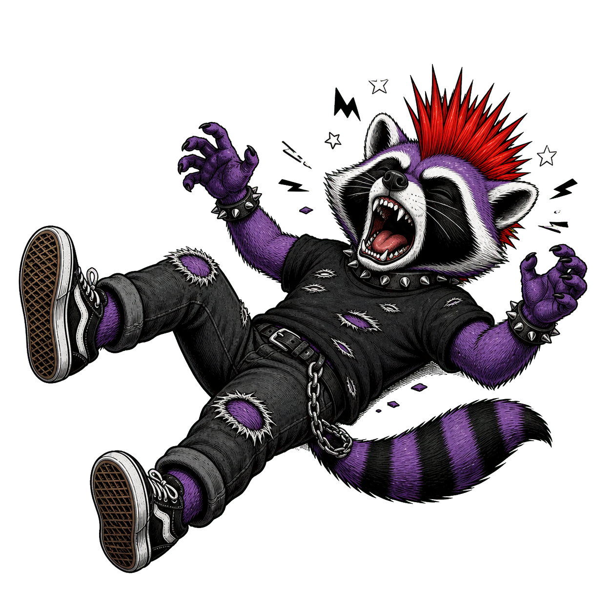

SMUG - BWLer
Halber Sprechgesang, Bläser, Punk und ein Grinsen, das direkt nach Ärger riecht. SMUG liefern mit "BWLer" genau diesen schiefen Quatsch, bei dem man sofort mehr will.
Irgendwas mit Punk seit 2022
Reviews
Freigegebene Besprechungen aus dem RandaleFUNK-Maschinenraum.

Halber Sprechgesang, Bläser, Punk und ein Grinsen, das direkt nach Ärger riecht. SMUG liefern mit "BWLer" genau diesen schiefen Quatsch, bei dem man sofort mehr will.

Farin Urlaub denkt an der Supermarktkasse. Ich gähne erst, halte durch und lande am Ende doch bei Jeanne d'Arc, Statistik und einem ziemlich guten Gedanken.

Massenkarambolage werfen dir eine komplett bekloppte Idee vor die Füße. Du verdrehst die Augen. Fünf Sekunden später grinst du trotzdem.

Ein Punk-Liebeslied, das nicht wegläuft, sobald es ernst wird. "Letzter Versuch" balanciert gefährlich nah am Kitsch entlang und fällt trotzdem nicht runter.

Wieder so eine Band, von der ich noch nie gehört habe. Dann läuft "ASSthetics" los und plötzlich liegt der Pfannenwender auf dem Boden.

Was für ein unfassbarer Krach. UNPLUGGED SYSTEM scheppern, rumpeln und brüllen sich durch "Absolut kein Punk", als hätte Feinabstimmung Hausverbot.

Worum geht's? Keine Ahnung. Bin dagegen. Ronny Platte stolpern mit "Dagegen" aus der Legendenkiste und klingen, als hätte ihnen niemand gesagt, dass man nach zwanzig Jahren vielleicht vernünftig werden sollte.

Alarmsignal brüllen "Schnauze voll und Fresse auf!" und ich sitze vor dem Rechner. Zweifelhafte Vorfreude. Leider wird daraus ziemlich schnell verdammte Gänsehaut.

Verdammte Scheiße. Punks, denen man nachts nicht begegnen möchte. Oder eigentlich doch. Wenn sie Bier dabei haben.

Tilli und Bidi können es mal wieder nicht lassen. Erst Band, dann Projekte, dann noch eine EP im Duo. Natürlich mit "Halt die Fresse".

Rauschen, Drum, Gitarre und BÄM! In your Face!

Da sind sie wieder. Diese Pappnasen von Champagner Punx. Allein der Name ist schon eine exorbitant inkommodierende Scheiße.
Manchmal ist es ganz angenehm, wenn nicht alles sofort nach vorne geprügelt wird. Wir leben in einer Zeit, in der alles laut, schnell und am besten gestern schon wieder vergessen sein soll. Da wirkt ein langsam vorgelesenes Hörbuch fast schon wie ein kleiner Gegenangriff.
Da freuen sich die Knalltüten von VIVA PUNK! sicher. Nach zwei Tagen über 1000 Klicks auf dem Video zu „Im Durst“.
Manche Bands wohnen nicht einfach im Plattenregal. Die belagern das Ding. Seit Jahrzehnten.
Direkt als der Song losgeht: Slipknot-Vibes. Nicht komplett, nicht als Kopie, aber dieses erste Gefühl ist da. Hartes Brett.